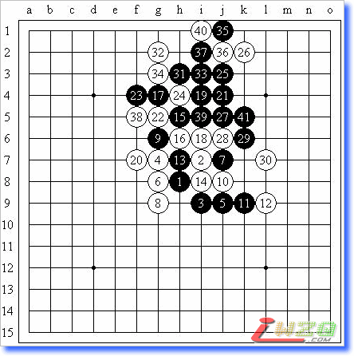

花浦札记
#1 花浦札记 作者：有志青年 发表时间：2008-6-12 12:28:04
【有志注：此文由屏蔽发表在他的百度空间中（ 点击进入 ），很多五子棋爱好者都阅读过屏蔽的五子棋文章，有理由相信这篇正在行进中的文章会成为五子棋爱好者不可缺少的入门教材。本文正在跟进中，请勿回复跟帖，如想发表个人看法请到『 五子棋交流 』 板块，谢谢！】
《花浦札记》序 2008年06月12日 星期四 10:45
近日重拾花浦旧谱，经典局面历历在目。虽然未曾正经背过全套棋谱，但下棋三年也不免多有接触，辅以计算力的支持，很多局面也并非难解。尽管如此，有趣的手段依然层出不穷，想起前辈们想到的一步步妙手和精彩的追胜，与自己极不扎实的基本功相比，不免汗颜。
花浦二局虽简单明了，但可谓集各类攻杀反击于一家，通读之后棋艺定能有所飞升。
花浦札记，先花月抑或先浦月？曾记得有人讨论过到底花月难胜还是浦月难胜。说来有趣，浦月为斜止，空间稍广，于是白棋骗招层出不穷，稍一疏忽便有漏算之虞；花月则线路丰富，但也容易令进攻者看不透局面，若无足够实力，恐怕难以驾驭局面。不过于我而言，重看花浦，尽管没有背过，但也算是复习之列，因为种种取胜手段早已在实战中积累了不少，计算力也足以应付一些小巧的追胜。到底先看哪个开局，先看强防还是弱防，区别并不大——难道弱防我就会杀吗？通观全局，悟其真义，才是我这么做的目的。
仅以此《花浦札记》为志，记录下我打谱过程中的一点点随想。初学者不妨稍稍玩味，高手们则权当其为小品数篇，止增笑耳。
2008年06月13日 星期五 00:12
看到爱五子棋网转载了这篇文章，实在诚惶诚恐……这些只是我在打谱过程中的一些很琐碎的想法，不成体系；不提帮助，不要把初学者绕晕就好，呵呵
#2 花浦札记（1） 作者：有志青年 发表时间：2008-6-12 12:30:22
白10的防守局面很经典，至白14定型，黑15是定式记录的好点，而类似的做杀方法也并不罕见，白16-h10常见，定式多有记载，或者有些棋谱干脆将这个15当作必胜型而不再继续研究了。该局面经确认必胜无误，但其中遇到了如下图白16的小问题：
《孙子兵法》有云：无所不备，则无所不寡。这个黑15拉开了白棋的防线，同时保留下方优势，准备经由右边向上过渡，令白棋无法兼顾，16-h10颇有分断之意，但联合上下之优势取胜并不难，而如此16则包含些许反击之意。其实这里稍许计算，即有简单取胜之手段，见下图：
白棋右止则黑A，左止则黑B，双杀之妙，也因黑棋进攻直截了当，网络有曰“暴力杀”。然而若想联系上下之优势，还颇需考虑白棋的反击，不可贸然进攻。见下图：黑17是轻妙的一手！
白18的位置看似优势其实无用，颇有“鸡肋”之感，以下熟悉的线路，追胜不难。
#3 Re:花浦札记 作者：五子酷 发表时间：2008-6-12 18:11:05
恩，虽然花蒲是必胜局，但作为我这样一个新手一定要把基本攻弄扎实。
#4 花浦札记（2） 作者：有志青年 发表时间：2008-6-13 7:34:55
继续分析上次的白6，其实我个人认为这个白6无非就是骗7-k7，8-g8的变化，黑7正解后，白8的强防也不多了。除了8-h9之外，下图的白8也是一型。9-h10是定式招法，常见，但终究觉得有“白棋放马过来”之意？如下图黑9的变化来源于疏星局白棋弱防黑棋必胜一型，不知是否可以？
白10有还原的意味，但与其选择同型的11-h10，这个11似乎更加犀利？此时黑棋应当注意不可选择11-X！熟悉花月必胜的朋友应该了解，那个黑11是一个非常经典的杀不掉的形状，12-A即可防住。
白10的另一变化，给黑棋多留了一条线路，意图在关键点限制黑棋，但黑11好型！似乎白棋被动防守都很难成立，如图的白12也是无奈的强烈反击。黑13后不管白棋如何防守，黑15都是此际要点，白棋难防。
关于《花浦札记（2）》的重要补充 2008年06月20日 星期五 23:58
今日上网，才发现这个白12的防守，13-g12则14-g9必然，13抵抗手段，14单挡，j8的位置被黑棋视同鸡肋……情况于黑棋其实不容乐观，强攻则会造成白棋的诸多反击……
#5 花浦札记（3） 作者：有志青年 发表时间：2008-6-14 9:32:15
昨日上网观棋，偶遇浦月此局面，遂顺带分析之。白8的想法并不很强，无非是骗黑9挡错，10-h6的变化，以前曾经分析过，确认是白必胜无误。但如下图黑9后，白棋除此白10外确无好点……因为反击力量实在是太弱了，而黑棋的线路又是如此之多。黑11、白12自然，以下……
如果对形势看不清楚的话，也万万不会想到黑棋竟然可以追胜了，以下是主要变化：

我还注意到白14外止的变化，此时黑15强行进攻！白棋冲四需要抉择，是制造禁手还是挡住活二……制造禁手的话黑棋线路反而丰富，追胜容易。
如下手段演变至白18最强！黑棋似乎可以追胜？或许算不清楚……盲目之中贸然进攻乃是大忌。其实如下的黑19简单的一手，无论白棋如何防守，黑棋都能找到简单的取胜的线路（注意联系上方的黑棋势力）。
然而，通过这一盘棋我所想到的却远不止这些……
1、最后一幅图的黑19
说起来，下棋是一件很简单的事情，复杂的是这些简单概念的表现形式——思考时无非从几个方面着想：进攻、防守、做棋……这并不很复杂，因此思考时千万不要有太多思维负担。这个黑19就是一个很好的例子，白棋没有任何先手的机会，黑19又是常见的绝好型，简单计算可以看出黑棋必胜，那么也就没必要再在寻找VCT上把自己弄得头晕眼花了（如果只想练习计算力的话除外 ：P）。
2、唯谱是从
这盘棋是在QQGame上看到的，对局双方很有意思，从其他几局来判断应该都是高手级别，不知何故考了个浦月必胜。通过查阅定式我发现，13-k10是最强点，实战则直接跳三，此时白棋很轻蔑了一下，说黑棋走的不是最强点。但这个点是必胜的，难道还有比这个更强的吗？无非是不同的想法而已了。定式这种东西，看看也就看看了，千万不要抹杀自己的创造力，遇到新的选点，更应当抱着一种好奇的心态来看待它。
3、古老定式的流失
白14挡中间时跳三时，我在下面就笑了——这个黑必胜了。倒不是因为我很快把结论算出来，而是因为这是以前做过的一道题目（《城》，高木乐山 永世名人创作，载于《五子连珠必胜法》（【日】新井华石 九段著））。
我随之想到，这样古朴的定式书上的题目恐怕没什么人见过吧！那天在火车上也讨论过这个问题：我总觉得一些很基本的定式在不断流失。现在下棋的话总是从实战或比赛去考虑，流行的东西多了去了，《五珠定石》里随便考一个定式，确定每次都能靠自己的计算力杀出来吗？考试局少了，不是因为侥幸心理在减少，而是因为保守心理在增加。我之所以重新打必胜谱，目的也就在此。
举个简单的例子吧：瑞星三打白必胜，这个结论是在前些年公布的。公布之初或即将公布之时，那套胜法也算一个机密了，知道的自然藏着掖着，背得滚瓜烂熟，不知道的只好干着急，拼命搜集相关定式，这导致后来一段时间里瑞星三打的知晓度越来越高，稍微有点水平的棋手人人都会了。但尘埃落定之后，定式公布，必胜不再神秘，关注程度自然也就随之下降，一个很严重的问题就是没有经历过那一段时期的棋手可能只是得到了个干巴巴的结论，由于在比赛中几乎绝迹，他/她也就不可能正式确认自己到底是否掌握了这个定式，最后的结果自然就是——没掌握。很多古老的定式都是这样在年青棋手中流失的，尽管那些定式就在某个.lib中静静躺着，却从未被翻看过，因为看起来是“没必要”的。
现在的流行定式都是在原定式的基础上发展出来的，但是原定式又是在更老定式的基础上发展起来的，这种脱节是很多人（比如我）根基不稳的原因之一。
#6 Re:花浦札记 作者：百医天使 发表时间：2008-6-14 13:34:09
的确是好文章，值得一看，瑞三打，我晕，我恨呀！#7 花浦札记（4） 作者：有志青年 发表时间：2008-6-16 8:08:34
继续拆浦月的白6~其实剩下的强防还真是不多了，但是下图这个白6还是相当复杂的。
黑7？！局面有趣，黑11后黑棋似乎依然可以必胜？白12以攻为守大概是唯一的机会！12-k8，13-k11强！
黑7正着！黑11跳三打开局面，黑17做杀妙手必胜！
白10逆止，进攻方向自然转移，黑13简明！
注意下图，白8活三强手！如果黑棋看不清进攻方向而分散了子力的话（白棋在上方没有有效的反击）……定式上白14在16位单挡，但g10明显是一重要的手筋，我认为先冲四的话，几乎接近白必胜了。
如图，黑9下止正着！白10也强，黑11切不可贪！否则白棋在下边一挡，黑棋没有后续手段了。攻守之间的平衡控制始终是下棋的难点，从初学者到高手，这都是一个极难掌握的问题，攻过头或防过度的情况随处可见。黑15无视白棋的眠三可以争先！以下黑棋优势过大，无防守要点。
白12限制右侧的防守，黑棋自然将矛头指向下方，黑13做杀好棋！利用禁手是执黑的基本功之一，同时该子还连接了其他两条线路，这样黑15的做杀就很自然了，避免白棋的眠三对局势产生更大的影响。

白12的变化布下陷阱，15随手，强烈的反击导致白棋取胜，白18做反杀是关键一点。
下图黑15正着：同样不忘占据关键点，所谓关键点就是不能失先而保持后续手段的意思。5、7、13、15、17……以及19！常见必胜型！
细心的朋友应该已经注意到，这里的白6和6-g8构成的白6如此相似，但胜法却大相径庭，正所谓差之毫厘，谬以千里。这也就是初学下棋定式时时常要强调自己拆棋的重要性（高手同样如此），而不能一股脑儿地接受，因为定式代表的只是主流变化，只有自己拆棋才能达到两个重要的目的：熟悉定式的不常见变化、灵活运用定式于其他局面。
#8 Re:花浦札记 作者：爱在晴天 发表时间：2008-7-13 15:31:24
学习中。。。。。。#9 Re:花浦札记 作者：我把自己丢拉 发表时间：2008-7-30 22:26:44


#10 Re:花浦札记 作者：卡西莫多 发表时间：2008-8-26 17:38:37
说的真好，有启发呀必胜也不是这样容易的#11 Re:花浦札记 作者：云月潇洒 发表时间：2008-10-25 18:11:05
 看不懂
看不懂
#12 Re:花浦札记 作者：幽幽紫灵 发表时间：2012-6-8 10:19:50
学习。